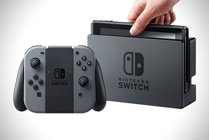

El 3 de Marzo de 2017 nos llegó la nueva consola de Nintendo. Ha recibido muy buena crítica y a pesar de que sus grandes lanzamientos aun no han llegado, Nintendo puede estar satisfecha con su gran aceptación por parte de los consumidores. La demanda ha sido tan grande, que nintendo ha tenido aumentar su producción inicial de 8 millones de unidades a la cifra de 20 millones para el primer año fiscal desde el lanzamiento, lo que supone el triple de lo pensado por Nintendo inicialmente. A día de hoy la consola ha conseguido vender más de 2 millones de dicho hardware en EE.UU. y aún queda la campaña Navideña. Podéis consultar dicha información en éste link
Toda consola tiene éxito en función de sus títulos, aquí están los 5 mejores:
| Pos | Puntuación(100 máx) | Título | Fecha de lanzamiento |
|---|---|---|---|
| 1 | 97 | The Legend of Zelda: Breath of the Wild | 03/03/2017 |
| 2 | 92 | Mario Kart 8 Deluxe | 28/04/2017 |
| 3 | 91 | Retro City Rampage DX | 03/08/2017 |
| 4 | 91 | Shovel Knight: Treasure Trove | 03/03/2017 |
| 5 | 88 | SteamWorld Dig2 | 21/10/2017 |
Datos obtenidos segun la página web METACRITIC
Por último añadir varios enlaces de interés de los próximos lanzamientos de Nintendo Switch: